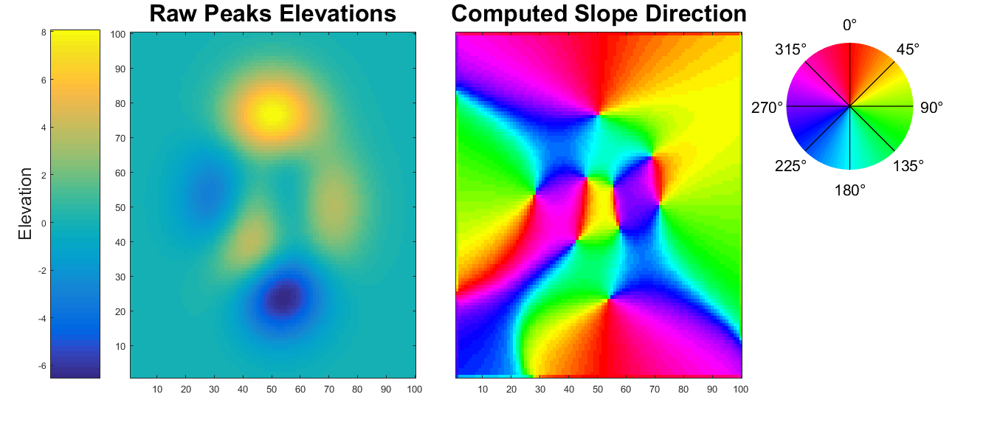
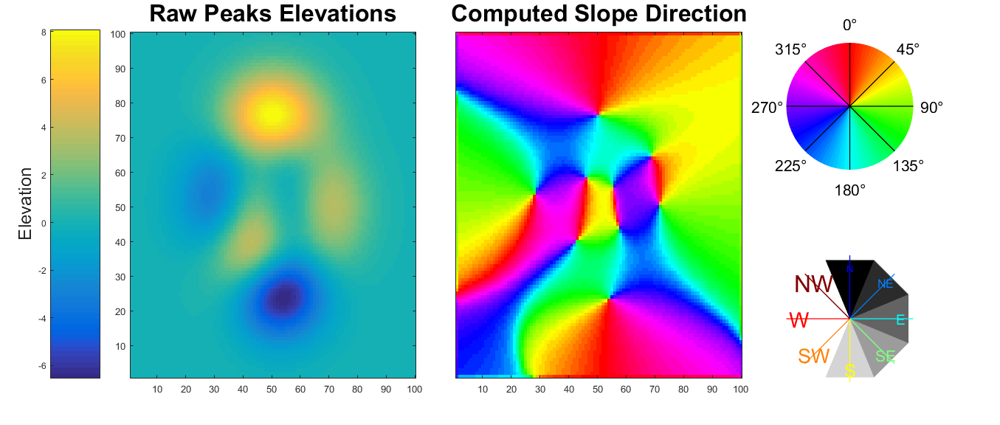

Contents
function exampleColorbarangle
zg = peaks(100);
dxwindow = [-1 0 1;-1 0 1;-1 0 1];
dywindow = [-1 -1 -1;0 0 0;1 1 1];
dx = conv2(zg,dxwindow,'same');
dy = conv2(zg,dywindow,'same');
az = math2az(atan2d(dy,dx));
f = figure(1);clf
h1 = subplot(1,5,1:2);
imagesc(zg);shading flat;
set(h1,'ydir','normal');
colormap(h1,'parula')
title('Raw Peaks Elevations','fontsize',24);
hc = colorbar('location','westoutside','position',[0.05 0.11 0.05 0.82]);
ylabel(hc,'Elevation','fontsize',18)
h2 = subplot(1,5,3:4);
imagesc(az);shading flat
set(h2,'ydir','normal');
colormap(h2,'hsv');
title('Computed Slope Direction','fontsize',24);
set(h2,'ytick','')
colorbarangle([0.7 0.6 0.3 0.3]);

make another more customized one that looks terrible
pos = [0.7 0.1 0.3 0.3];
nslices = 8;
cmap = gray(256);
tick = [0 45 90 135 180 225 270 315];
ticklabel ={'N','NE','E','SE','S','SW','W','NW'};
ticklinecolor = jet(8);
ticklabelcolor = jet(8);
ticklinewidth = 1;
cax = [10 215];
textscalefactor = .8;
tickfontsize = [10:2:24];
colorbarangle(pos,'nslices',nslices,'cmap',cmap,'tick',tick,...
'ticklabel',ticklabel,'ticklinecolor',ticklinecolor,...
'ticklabelcolor',ticklabelcolor,'ticklinewidth',ticklinewidth,...
'cax',cax,'textscalefactor',textscalefactor,...
'tickfontsize',tickfontsize);

end